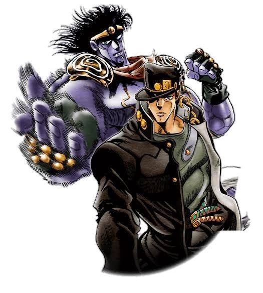
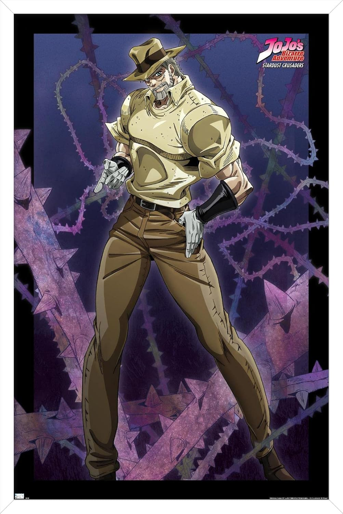
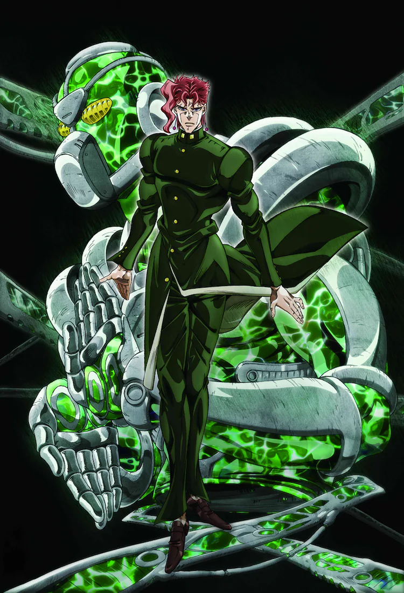
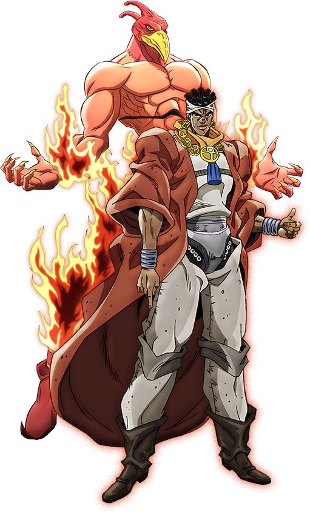
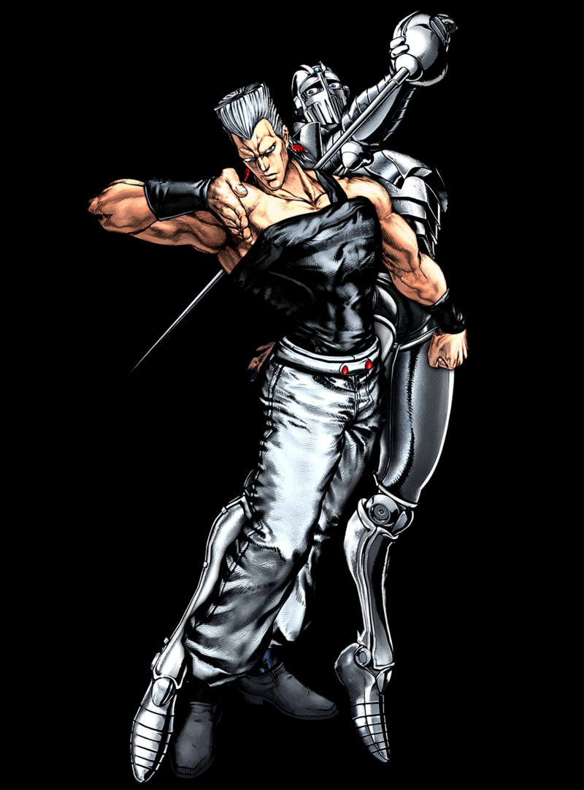
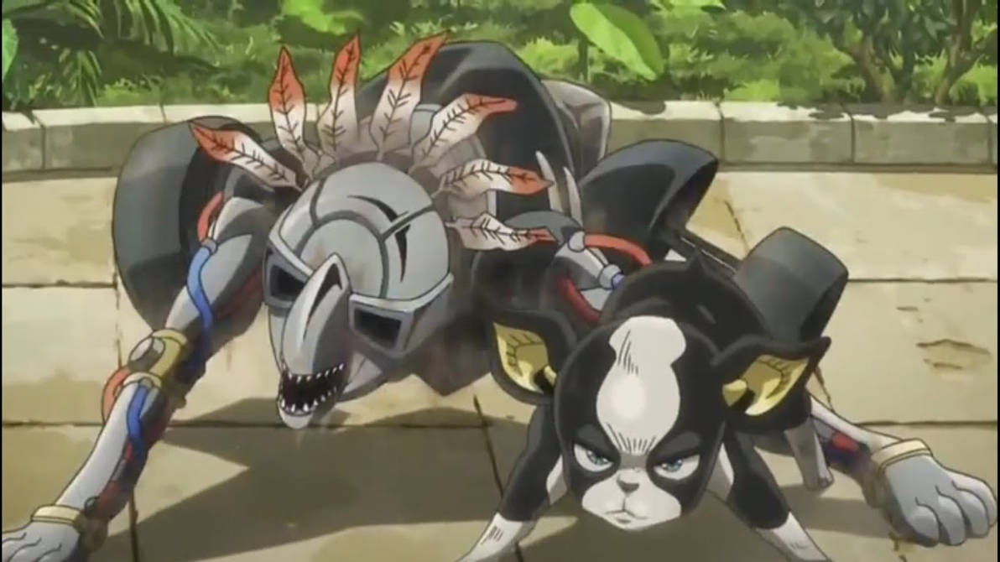
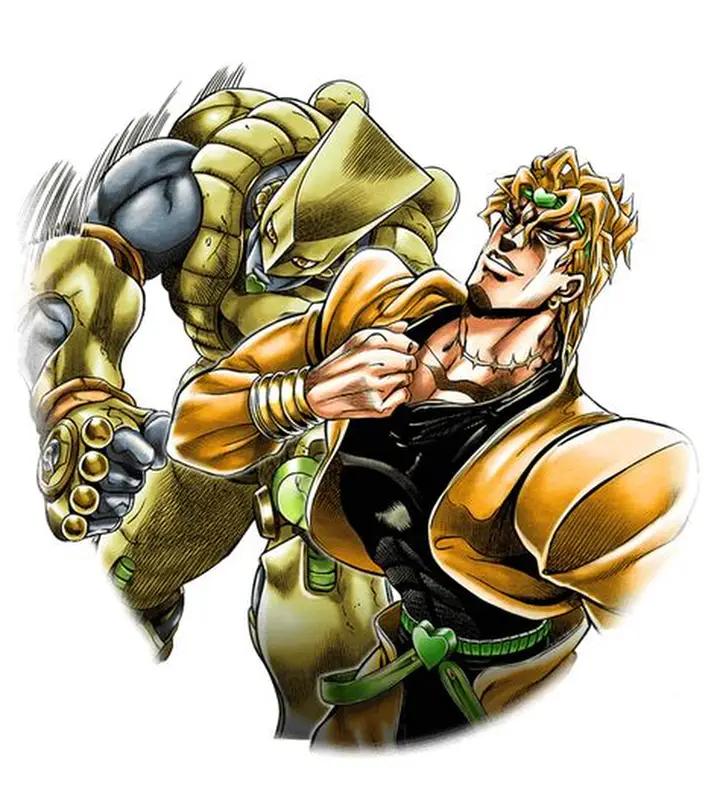

主要キャラクター
空条承太郎

第三部の主人公。冷静沈着で強い正義感を持つ高校生。スタンド「スタープラチナ」を操る。
ジョセフ・ジョースター

承太郎の祖父。スタンド「ハーミットパープル」を使用する。仲間をまとめるリーダー的存在。
花京院典明

承太郎の仲間。頭脳派で冷静な性格。スタンド「ハイエロファントグリーン」を使い、遠距離攻撃を得意とする。
モハメド・アブドゥル

炎を操るスタンド「マジシャンズレッド」の使い手。誠実で仲間思いの性格。
ジャン＝ピエール・ポルナレフ

フランス出身の剣士。明るく情に厚い性格。スタンド「シルバーチャリオッツ」を使う。
イギー

ニューヨーク出身の犬。気まぐれで自由奔放だが仲間思い。スタンド「ザ・フール」を使う。
DIO（ディオ）

第三部のラスボス。承太郎たちの宿敵。スタンド「ザ・ワールド」を操り、時間を止める能力を持つ。